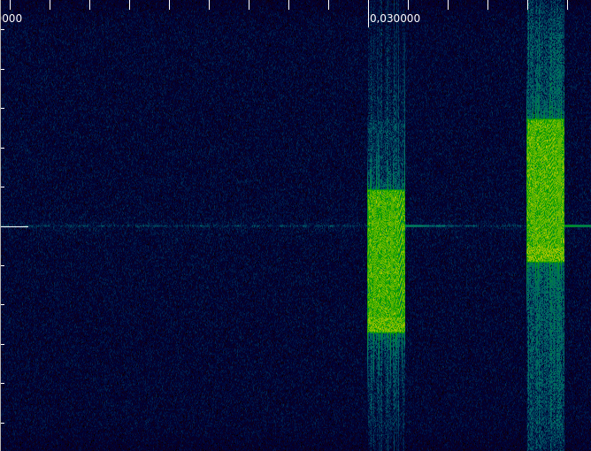
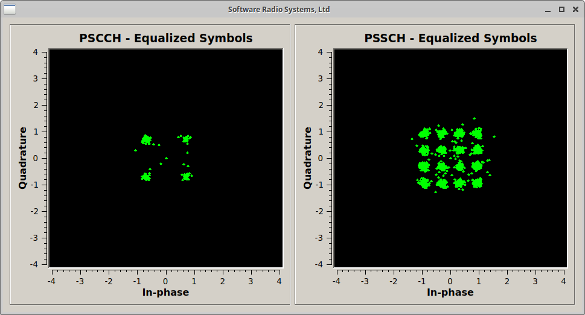
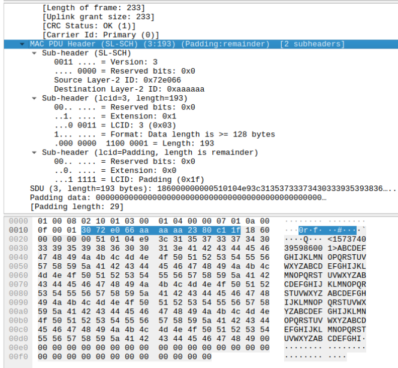
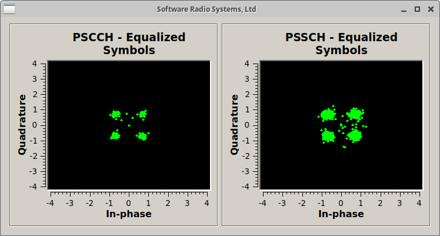

C-V2X 信令
简介
蜂窝-V2X (C-V2X) 或蜂窝车辆万物互联，是一项 3GPP 标准，旨在促进自动化和（协作）智能交通系统 (C-ITS)。 通过C-V2X，车辆或其他设备将能够直接相互通信，而无需经过 蜂窝基础设施。这就是所谓的 侧链 通信具有几个优点，例如减少对等方通信时的通信延迟 在附近，但当通信资源可以在不同位置重复使用时，也可以增加网络容量。 车辆扩展首次在 3GPP Release 14 中引入，但实际上是基于早期支持直接设备到设备 (D2D) 的尝试 蜂窝网络内的通信。 尽管C-V2X被认为是未来交通系统的关键推动者以及主要市场参与者、芯片制造商、运营商和基础设施 供应商正在大力推动这项技术，但可用的设备却很少。但即使官方宣布，也很难 为开发人员或研究人员购买它们，尤其是少量购买。
自版本 20.04 起，srsRAN 4G 包括在 AGPL v3 许可下在版本 14 中标准化的 3GPP Sidelink 物理层的完整实现。 这包括用于接收和发送操作的所有传输模式的所有控制和数据通道以及信号。 这允许使用软件无线电构建完整且完全兼容的 C-V2X 调制解调器。
本应用笔记展示了如何使用 srsRAN 4G 20.04 中提供的仅接收示例来解码来自第三方商业 C-V2X 的传输 设备。
要求
C-V2X 示例需要能够处理 10 或 20 MHz 宽信道的无线电。此外，该设备需要能够 从 GNSS 信号中获取定时信息，例如GPS 信号。我们使用带有 GPSDO 模块的 Ettus Research B210 进行了测试。
C-V2X 信号剖析
我们首先看一下 C-V2X 设备发送和接收的典型信号。下图显示 从商用 C-V2X 调制解调器捕获的信号。该信号是通过样本在 5.92 GHz（通道 184）处捕获的 速率为 11.52 MHz。

两个相同的子帧相继发送，间隔三个空子帧。 第二传输实际上是第一子帧的重传。发生重传 具有固定的时间偏移，但可能占用不同的频率资源。请注意，没有致谢信息 向发送者提供有关是否已收到传输的反馈。
还值得注意的是，没有专门的同步信号作为定时传输 完全来自 GNSS 信号。
有关 Sidelink 信号结构的更多信息，请查看这篇优秀文章（尽管不关注 C-V2X） 白皮书 来自罗德+施瓦茨。
解码 C-V2X 信号
本应用笔记中使用的 COTS C-V2X 设备默认使用以 5.92 GHz 为中心的 184 通道进行传输。 它还使用 10 MHz（或 50 PRB）的默认信道带宽。为此做准备时，请确保转动 打开设备并确保其具有良好的 GPS 接收能力。然后，启用传输示例。确保您可以使用频谱观察传输 例如分析仪。
我们必须选择解码信号，我们要么首先捕获信号并将其保存到文件中并处理 文件，或者我们捕获现场并实时解码。我们从第二个选项开始 并解码实时信号，这也是默认情况 pssch_ue.
实时捕获和解码
为此，我们可以简单地运行 pssch_ue 示例。默认使用 5.92 GHz， 但可以使用以下命令更改频率 -f 参数。 不过，我们必须确保通过参数在 GPS 同步模式下使用设备。
$ ./lib/examples/pssch_ue -a clock=gpsdo
open file to write
Opening RF device...
[INFO] [UHD] linux; GNU C++ version 7.4.0; Boost_106501; UHD_3.14.1.1-release
[INFO] [LOGGING] Fastpath logging disabled at runtime.
Using GPSDO clock
Opening USRP channels=1, args: type=b200,master_clock_rate=23.04e6
[INFO] [B200] Detected Device: B210
[INFO] [B200] Operating over USB 3.
[INFO] [B200] Detecting internal GPSDO....
[INFO] [GPS] Found an internal GPSDO: GPSTCXO , Firmware Rev 0.929a
[INFO] [B200] Initialize CODEC control...
[INFO] [B200] Initialize Radio control...
[INFO] [B200] Performing register loopback test...
[INFO] [B200] Register loopback test passed
[INFO] [B200] Performing register loopback test...
[INFO] [B200] Register loopback test passed
[INFO] [B200] Asking for clock rate 23.040000 MHz...
[INFO] [B200] Actually got clock rate 23.040000 MHz.
Setting USRP time to 1588858638s
[INFO] [MULTI_USRP] 1) catch time transition at pps edge
[INFO] [MULTI_USRP] 2) set times next pps (synchronously)
Setting sampling rate 11.52 MHz
Set RX freq: 5920.00 MHz
Set RX gain: 50.0 dB
Using a SF len of 11520 samples
OOSCI1: riv=4, mcs=5, priority=2, res_rsrv=0, t_gap=3, rtx=1, txformat=0
SCI1: riv=1, mcs=5, priority=2, res_rsrv=0, t_gap=11, rtx=1, txformat=0
SCI1: riv=1, mcs=5, priority=2, res_rsrv=0, t_gap=8, rtx=0, txformat=0
SCI1: riv=0, mcs=5, priority=2, res_rsrv=0, t_gap=8, rtx=1, txformat=0
^CSIGINT received. Exiting...
num_decoded_sci=4 num_decoded_tb=4
Saving PCAP file to /tmp/pssch.pcap
如果您编译了带有 GUI 支持的 srsRAN 4G，您应该在屏幕上看到类似的内容。 在此特定示例中，我们可以看到控制信道 (PSCCH) 的 QPSK 星座 以及数据信道 (PSSCH) 的 16-QAM 星座。

您可以使用 Ctrl+C 停止解码器。退出后，应用程序会写入解码后的 PCAP 文件 发信号给 /tmp/pssch.pcap。可以使用 Wireshark 检查该文件。下面的截图显示 Wireshark 对接收到的信号进行解码。在此示例中，仅传输随机数据 但如果您的设备传输实际的 ITS 流量，您也应该能够在那里看到。

捕获信号到文件并进行后处理
作为第二种选择，我们也可以先捕获信号，将其保存到文件中，然后进行后处理 捕获。例如，下面的命令将 200 个子帧写入 /tmp/usrp.dat.
$ ./lib/examples/usrp_capture_sync -l 0 -f 5.92e9 -o /tmp/usrp.dat -a clock=gpsdo -p 50 -m -n 200
Opening RF device...
[INFO] [UHD] linux; GNU C++ version 7.4.0; Boost_106501; UHD_3.14.1.1-release
[INFO] [LOGGING] Fastpath logging disabled at runtime.
Using GPSDO clock
Opening USRP channels=1, args: type=b200,master_clock_rate=23.04e6
[INFO] [B200] Detected Device: B210
[INFO] [B200] Operating over USB 3.
[INFO] [B200] Detecting internal GPSDO....
[INFO] [GPS] Found an internal GPSDO: GPSTCXO , Firmware Rev 0.929a
[INFO] [B200] Initialize CODEC control...
[INFO] [B200] Initialize Radio control...
[INFO] [B200] Performing register loopback test...
[INFO] [B200] Register loopback test passed
[INFO] [B200] Performing register loopback test...
[INFO] [B200] Register loopback test passed
[INFO] [B200] Asking for clock rate 23.040000 MHz...
[INFO] [B200] Actually got clock rate 23.040000 MHz.
Setting USRP time to 1588858960s
[INFO] [MULTI_USRP] 1) catch time transition at pps edge
[INFO] [MULTI_USRP] 2) set times next pps (synchronously)
Set RX freq: 5920.000000 MHz
Set RX gain: 60.0 dB
Setting sampling rate 11.52 MHz
Writing to file 199 subframes...
Ok - wrote 200 subframes
Start of capture at 1588858963+0.010. TTI=108.6
与上面显示的示例类似，现在可以使用以下命令解码这些子帧 pssch_ue 通过指定 带参数的输入文件名 -i.
$ ./lib/examples/pssch_ue -i /tmp/usrp.dat
...
我们还可以使用该示例来解码测试向量之一：
$./lib/examples/pssch_ue -i ../lib/src/phy/phch/test/signal_sidelink_cmw500_f5.92e9_s11.52e6_50prb_0offset_1ms.dat
Using a SF len of 11520 samples
SCI1: riv=0, mcs=5, priority=0, res_rsrv=1, t_gap=0, rtx=0, txformat=0
num_decoded_sci=1 num_decoded_tb=1
Saving PCAP file to /tmp/pssch.pcap
在这个例子中，我们可以看到PSCCH和PSSCH都使用QPSK作为调制方案。
